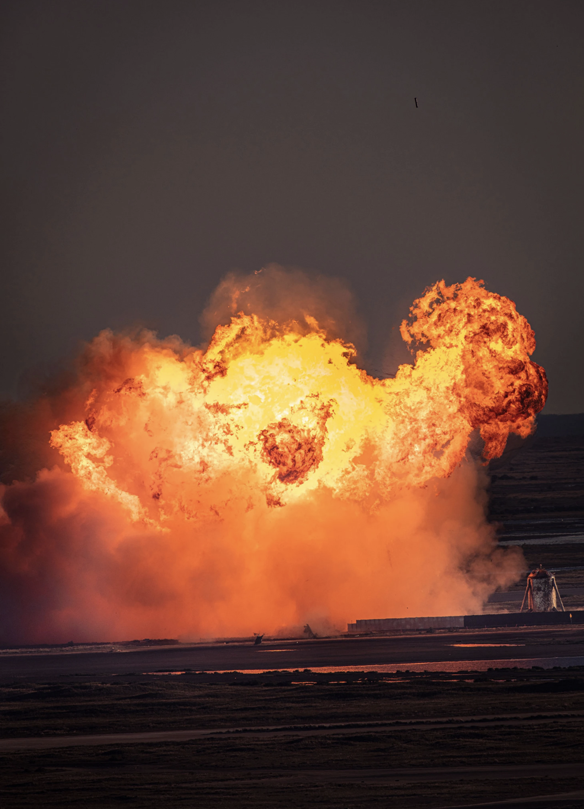
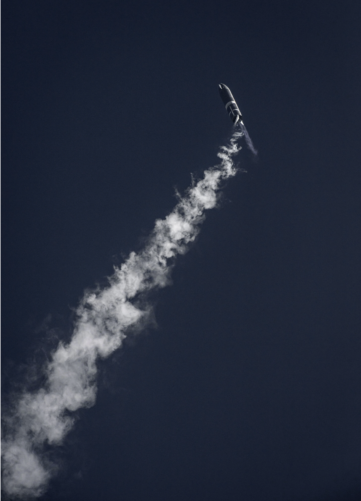

SOUTH PADRE ISLAND, TEXAS - The engines ignited with a burst of fiery exhaust, kicking up a bloom of brown dust, as the 165-foot-tall rocket, known as Serial Number 8 (SN8), made its way into the blue sky over Boca Chica Beach, outside Brownsville, Texas. The prototype seemed to stagger under its 110-ton weight, despite a trio of engines—each producing half a million pounds of thrust—propelling it through the air.
SN8 rose to about 41,000 feet—higher than domestic airliners fly—before shutting off its engines and turning horizontally, as planned. While freefalling, the powered fins kept the craft oriented on its belly, looking more like a dirigible balloon than a spacecraft as it descended toward its landing pad. With a surprisingly graceful motion, the prototype flipped back to a vertical position with the reignition of two of its engines, and in a green-white blaze of exhaust came in for a retrorocket landing worthy of Flash Gordon.
Then its legs hit the ground, and SN8 exploded in a roiling fireball. When the smoke cleared, all that was left of the rocket was a charred and misshapen nose cone resting on the landing pad.
There’s a reason these born-to-die testbeds are given dispassionate serial numbers instead of names. The new spaceship’s flight plan was so risky that Elon Musk, the iconoclastic billionaire founder of SpaceX, had openly predicted that SN8 probably isn’t going to make it.
For a prototype like SN8, part of a test program to develop a new rocket called Starship, success is not defined by survival but by the amount of data generated during flight. The longer the flight and the more maneuvers attempted, the better.
With its sharp nose, tail fins, and metallic sheen, Starship’s design seems ripped from a 1950s sci-fi paperback. Its stated purpose doesn’t spoil the illusion. SpaceX envisions a behemoth spacecraft designed to carry 100 tons, including up to 100 people, into space and land anywhere on Earth, the moon, or Mars.
This week’s explosive flight test is a pivotal first step toward what SpaceX and other space flight experts hope will accelerate humanity’s push into the cosmos. Starship will be a game changer, period,
says Laura Forczyk, an industry consultant and NASA expert for planetary science missions. If successful as currently envisioned, it will be able to carry more people into space with one launch than the total number of people launched into space per year now.
To pursue this vision, SpaceX is transforming a quiet stretch of South Texas beach into a factory and test site for the largest launch system ever built. It hasn’t been entirely smooth sailing. The company bought out most of the homes in a local community amid bitter feelings from the homeowners, and environmentalists are increasingly worried that the massive rockets that SpaceX is building will disrupt wildlife on the once sleepy shoreline.
The company is not taking media interviewss about Starship, but instead trying to keep the team focused on mission-critical tasks,
said SpaceX spokesman James Gleeson.
After the flight, however, Musk took to Twitter, elated that the test generated the data they had hoped for. During the last moments of the flight, he explained, low pressure in a liquid oxygen tank sapped the engines of enough power to slow SN8 for a successful touchdown. What followed was an RUD, or rapid unexpected disassembly—Musk-speak for an explosive crash.
Putting the crater in the right spot was epic,
he added.
Starship would be able to lift heavier spacecraft into space, deliver humans and cargo to the moon and possibly Mars, and also launch planetary spacecraft, like missions to Mars or to Europa, into faster trajectories, says Matthew Shindell, planetary science and exploration curator at the Smithsonian’s National Air and Space Museum..
But cargo aside, Musk maintains that his company’s ultimate purpose is to make the human species multiplanetary. Starship is the metallic embodiment of that wild ambition. SpaceX aspires to eventually build and operate a thousand Starships, some ferrying supplies and people to Mars.
What was once a passion project for Musk has impressed NASA enough to include Starship as one of three vehicles being considered to land astronauts on the moon. The U.S. military is also considering using the rocket to fly cargo to various locations around the planet.
The company has come a long way since its founding in 2002. Under the steady guidance of president Gwynne Shotwell, SpaceX recaptured the U.S. commercial satellite launch market, launching payloads on its successful Falcon 9 rocket, which recently flew for the 100th time. It began lofting cargo to the International Space Station for NASA in 2012, and national security satellites for the military in 2018. Earlier this year, SpaceX became the first company in history to launch humans.
Shotwell is responsible for turning Musk’s lofty goals into realities. When Elon says something, you have to pause and not immediately blurt out, Well, that's impossible,
she said during a 2018 TED talk. So, you zip it and you think about it, and you find ways to get that done.
Along the way, SpaceX has attracted a passionate fan base inspired by its multiplanetary ambitions. This vision of putting humans on Mars seems far-fetched, and it may never materialize, but it does seem to be a source of morale within SpaceX and an aspect of SpaceX’s public identity,
Shindell says. They are selling launch services, but they’re also selling images and ideas of the future.
The human residents mostly live in what’s called Boca Chica Village, an unincorporated hamlet that, at its peak, had about 30 homes and trailers in and around its unofficial borders. Water wells and septic tanks replace public utilities at this remote outpost.
Cheryl Stevens grew up in Brownsville, and her family considered the isolated beach their best kept secret for four generations. She rented out her beach home and planned to retire there. She was never put off by Boca Chica’s lack of infrastructure, such as the absence of streetlights and garbage trucks. Even in Brownsville, people don’t know Boca Chica or ever come out here. You have to go out of your way to find it,
she says.
But SpaceX saw Boca Chica Beach as a possible spaceport for the future. The location has some key advantages for launching rockets: very few people live nearby, a large body of water where rockets can safely fall, and the proximity to the Equator means the spin of Earth provides an extra boost into space.
Even NASA had considered the area for its main launch center in the 1960s, but it chose Florida instead because the swampland where Kennedy Space Center now sits was considered more remote—and because the U.S. government in 1947 accidentally crashed an experimental ballistic rocket in Mexico, causing a diplomatic incident. Now SpaceX has single-handedly brought the dream of a launch site back to the border
The company, which spent 15 years as a startup fighting for survival against aerospace giants such as Boeing and Lockheed Martin, has now taken Earth’s orbit by storm. SpaceX launches cargo and crew to the International Space Station for NASA as well as lofting dozens of civilian and military satellites for customers around the world each year.
In 2014, after quietly buying up tracts of land, SpaceX announced Boca Chica Beach as the location for its test and flight facility, with Texas contributing $15 million for county infrastructure. The company started bringing tons of dirt to stabilize the ground under what would become a launch pad. But in 2016, as SpaceX focused on launching astronauts for NASA, the work stopped. The only thing that identified the beach as the location of the most audacious project in aerospace history was a mound of dirt and a metal sign reading, SpaceX South Texas Launch Site.
Then in 2017 the concrete trucks appeared to lay the foundation. A manufacturing facility sprouted up, where metalworkers stacked stainless steel hulls for Starship prototypes. When the launchpad was finished, a steady convoy of trucks rumbled down the now-battered Route 4 with tanks of oxygen and methane to power the rockets.
When SpaceX started testing its Raptor rocket engine in 2018, paper fliers appeared on village doors announcing the shutting of Route 4 during ignitions. The closures often lasted all day, sometimes several times a week. Residents couldn’t get past roadblocks without proving they lived there, as if SpaceX controlled the county—but the lines were blurred, considering off-duty sheriff’s deputies work as company security at the launch site, Stevens says.
In September 2019, SpaceX sent a letter to the handful of homeowners in Boca Chica Village, offering to buy their land for three times the appraisal value. The homeowners spoke to an attorney who advised them to sell, since the county could use eminent domain to remove them on SpaceX’s behalf. This prompted most owners to take the deal, albeit after negotiating for better terms than the letter offered.
It seemed like the writing was on the wall,
Stevens says. She signed her land over in October 2019 at a profit but regards accepting the payout as a surrender of her family’s grounds. It’s not about the money,
she says. It doesn’t make up for what I’ve lost, and my family’s lost.
The full-time population at Boca Chica Village now numbers six, which doubles with seasonal occupants. Stevens estimates there are 10 landowners that have not sold to SpaceX. She calls them her feisty neighbors
and expects they will never sell willingly.
During the SN8 flight, the village residents were relocated to a hotel on nearby South Padre Island to watch in safety.
Behind the ambitious program, Musk has become a polarizing character for his personal and business lives. The SEC fined him after he erroneously tweeted about taking Tesla public in 2018, and NASA conducted a workplace review of SpaceX after he smoked pot on a popular podcast. His love life, mood swings, treatment of employees, and erratic Twitter posts attract enough attention that a Vanity Fair writer recently quipped, If we end up on Mars, Musk will be there too, and he will bring his extremes with him.
At the same time, Musk’s fan base grows. Some spaceflight watchers around the world have lost faith in the traditional aerospace giants and big-ticket NASA programs, such as the Space Launch System rocket, delayed by years and running billions of dollars over its initial budget, according to the space agency’s Inspector General.
Tony Greco, 52, and his 24-year-old son traveled from Houston to watch SN8 fly, working remotely from an RV in a South Padre trailer park. No one else is getting it done but Elon Musk,
he said during a visit to the SpaceX pad the night before the launch. He then pointed to the Starship prototype. That is the step, right there, to get us off the mud ball.
Musk’s net worth, measured at $28 billion in 2019, rose by an astounding $100.3 billion in 2020. Much of that growth can be attributed to Tesla, now the most valuable car company in the world, but SpaceX has also achieved booming business thanks to some impressive achievements in rocketry—such as bringing orbital boosters back from space to land and relaunch again, a first in aerospace history.
For all the talk about Musk’s dream of Mars, Starship is attracting customers. The first was Japanese billionaire Yusaku Maezawa, who paid an undisclosed amount to charter a ride around the moon with as many artists as the ship can hold. In June, NASA picked Starship as one of three lander designs that could carry astronauts to the lunar surface. More surprisingly, perhaps, the head of the Defense Department’s U.S. Transportation Commandrevealed that it is considering using Starship to make deliveries of military cargo across the globe in an hour.
Achieving a privately funded human landing on Mars may not be feasible by Musk’s proposed date in 2026, but that doesn’t mean Starship can’t be profitable. SpaceX can potentially find customers here in the U.S, or internationally, who want to send heavy things into space or send spacecraft on faster journeys to the outer planets,
Shindell says. So there is potentially a lot of money to be made on the way to Mars, so to speak.
Damage has already been done. In July 2019, a rocket test sparked a fire in Boca Chica State Park, quickly spreading across more than 10 acres. The U.S. Fish and Wildlife Service (USFWS) filed a complaint, stating that it was not notified until the next day and by that time, the fire was smoldering and flared up and had burned approximately 130 to 135 acres more.
Another fire later that year went unfought for three hours because firefighters could not enter the area for fear of inhaling methane fumes.
Fires like these during bird migrations or turtle nesting seasons could be devastating. The USFWS noted to the Federal Aviation Administration (FAA) in November 2019: SpaceX should strive to avoid or reduce the number of testing/launches between March 15 and August 15 to avoid disturbance to nesting sea turtles and shorebirds that utilize refuge areas immediately adjacent to the launch site.
The FAA’s response did not encourage environmentalists: SpaceX is currently avoiding Starship testing and launches during migratory bird and sea turtle nesting seasons. However, some testing and launches might occur during this period.
It added that the company was open to establish compensation for Refuge damages caused by SpaceX anomalies.
In mid-November, SpaceX invited representatives from two local environmentalist groups to visit their facilities. This was a first-time thing,
says meeting attendee Jim Chapman, the president of Friends of the Wildlife Corridor. The meeting was not contentious, but it didn’t start a dialogue. I think SpaceX was trying to make nice,
Chapman says.
Until recently, the FAA had maintained that an Environmental Impact Statement (EIS) conducted in 2014 covered SpaceX’s operations, despite the fact that the work had grown significantly in scale with the SuperHeavy project. But last month, just after the meeting with local environmentalists, the FAA announced a more comprehensive EIS to examine SpaceX’s operations.
Instead of seeing this as welcome news, Chapman feels the FAA is now protecting the company from legal challenges by bringing the environmental review under government auspices. What SpaceX had to worry about was not necessarily the FAA, which is almost a partner, but being taken to court,
Chapman says.
SpaceX media representatives didn’t respond to questions about the environmental impact of its operations in South Texas. But there may be a development that could ease the impact on the beach’s ecosystems in the future, even as SpaceX expands.
In June 2020, SpaceX posted a job opening in Brownsville for Offshore Operations Engineers
to build an operational offshore rocket launch facility.
Musk himself weighed in shortly after on Twitter: SpaceX is building floating, superheavy-class spaceports for Mars, moon & hypersonic travel around Earth.
Abandoned offshore oil derricks, visible from Boca Chica Beach, are one possible location for a permanent SpaceX launchpad.
Offshore launch pads may ease the road closures and provide relief to nature. The biggest impacts on wildlife are during tests and launches,
Chapman says. So moving offshore would have less.
But for now, all the action remains on the shore, including work on SuperHeavy. Chapman takes issue with the way SpaceX seemingly asks for regulator permission after they have already begun the work in question. I mean, they don’t have permission to launch the big rocket [SuperHeavy], and it doesn’t seem to be slowing them down at all, does it?
he says.
After the sun went down, Musk spoke to the attendees. This thing is going to take off, fly to 20 kilometers, and come back and land, in about one or two months,
Musk said over gusts of wind and applause. That will be pretty epic, to see that thing take off and come back.
He was a year and two months late, 7.5 kilometers too low, and one landing short, but Starship is now flying—and dying—on Boca Chica Beach. From this point on, the community is a flight test center. Judging by the hundreds of people who lined the shoreline of nearby South Padre Island during the SN8 flight, it’s also the birth of space tourism in South Texas. The handful of locals have been replaced by a horde of visitors.
It’s impossible to predict whether or not SpaceX will succeed in the short- or long-term with Starship,
Shindell says. But their activities seem to have inspired a good amount of public confidence, good will, and enthusiasm for space exploration.
The work continues. Up the road from the remains of SN8, SN9 is already assembled and ready for action, waiting inside a hangar for its turn on the pad. An assembly line of Starship prototypes will follow. About every two years, the planets align to enable the fastest possible flight between Earth and Mars—and Elon Musk wants to be ready.